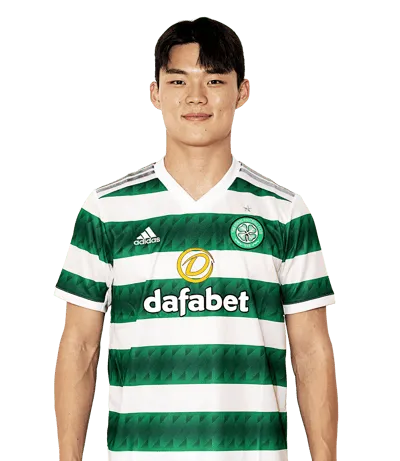

오현규
Oh Hyeon-Gyu


소속팀 :
셀틱 FC
셀틱 FC
출생 :
2001년 4월 12일 (22세) 경기도 남양주시
2001년 4월 12일 (22세) 경기도 남양주시
신체 :
키 185.4cm / 체중 83kg
키 185.4cm / 체중 83kg
포지션 :
스트라이커
스트라이커
주발 :
오른발
오른발
플레이스타일 :
우선 탈아시아급 피지컬이 최대 강점. 체구가 워낙 단단한데, 유스 시절부터 압도적인 신체 스펙을 갖춘 선수였고 상무에서 벌크업에 성공하면서 장점이 배가되었다. 어린 나이에도 이미 K리그1에서 경쟁력을 입증했고, 거칠기로 유명한 스코티시 프리미어십에 진출해서도 여유있게 포스트 플레이를 시도하거나 반칙을 유도하는 등 피지컬을 적극 활용하는 모습을 보여주고 있다. 또한 특유의 낮은 무게중심과 균형감각, 탄탄한 신체 밸런스를 보면 빅터 오시멘과도 흡사한 부분이 있다. 슛 감각이나 골 결정력도 준수한 편인데, 프로 무대에서 경험을 쌓을 수록 결정력이 빠르게 발전하는 모습도 인상적이다.
우선 탈아시아급 피지컬이 최대 강점. 체구가 워낙 단단한데, 유스 시절부터 압도적인 신체 스펙을 갖춘 선수였고 상무에서 벌크업에 성공하면서 장점이 배가되었다. 어린 나이에도 이미 K리그1에서 경쟁력을 입증했고, 거칠기로 유명한 스코티시 프리미어십에 진출해서도 여유있게 포스트 플레이를 시도하거나 반칙을 유도하는 등 피지컬을 적극 활용하는 모습을 보여주고 있다. 또한 특유의 낮은 무게중심과 균형감각, 탄탄한 신체 밸런스를 보면 빅터 오시멘과도 흡사한 부분이 있다. 슛 감각이나 골 결정력도 준수한 편인데, 프로 무대에서 경험을 쌓을 수록 결정력이 빠르게 발전하는 모습도 인상적이다.
등번호 :
국가대표 26번, 클럽팀 19번
국가대표 26번, 클럽팀 19번
팀 커리어 :
수원 삼성 블루윙즈 (2019~2022) -> 상주-김천 상무 FC (2020~2021 / 군 복무) -> 셀틱 FC (2023~ )
수원 삼성 블루윙즈 (2019~2022) -> 상주-김천 상무 FC (2020~2021 / 군 복무) -> 셀틱 FC (2023~ )
국가대표 :
3경기 (대한민국 / 2022~ )
3경기 (대한민국 / 2022~ )
SNS :

응원가 :